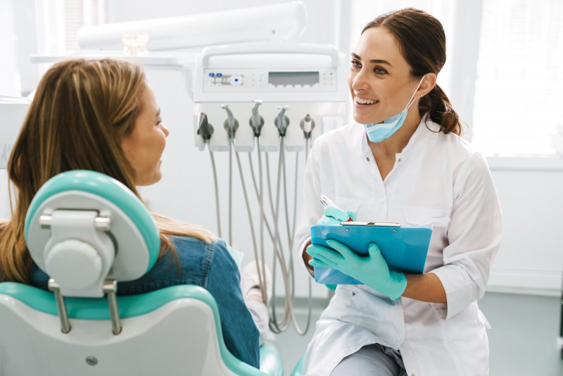

We know visiting the dentist can feel overwhelming. That is why every appointment begins with an unhurried, honest conversation—walking you through digital images of your smile and explaining every option clearly before any treatment starts.
Led by HPCSA-registered dental surgeons with over 12 years of experience treating anxious adults and children across KZN.
No uncomfortable impression trays. Our intraoral cameras show you high-definition images of your teeth on screen in real time.
Every instrument undergoes hospital-grade autoclave sterilisation and sealed pouch tracking for complete peace of mind.